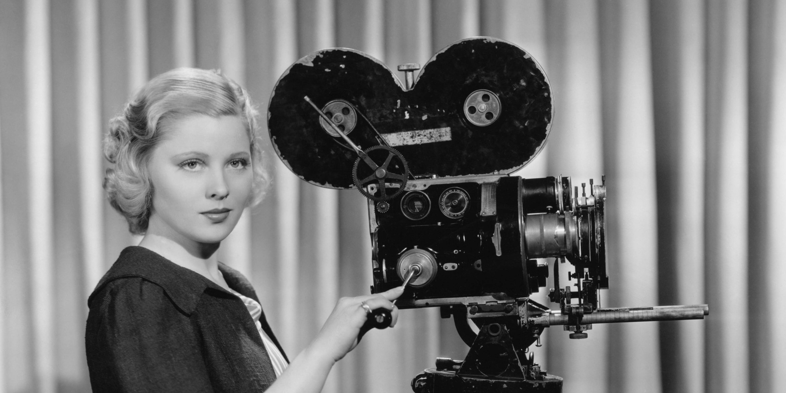

After reading “In Defense of the Poor Image, I decided to gather a couple of quotes that stood out to me as I read this piece.
“With the possibility to stream video online, this condition started to dramatically change. An increasing number of rare materials reappeared on publicly accessible platforms, some of them carefully curated (Ubuweb) and some just a pile of stuff (YouTube).”
What I got from the article is that before digital and online media had erupted, certain forms of cinema could become more special depending on how accessible they were to the public eye. Before computers were invented, finding access to a rare form of cinema was extremely difficult, in turn making the value of these films rise as accessibility lowered. Now in our modern culture, watching anything can be done by the click of a button. These new digital platforms make what was rare and valuable before become public in a matter of seconds and thus had produced a large number of “poor images” today.

“Their situation reveals much more than the content or appearance of the images themselves: it also reveals the conditions of their marginalization, the constellation of social forces leading to their online circulation as poor images. Poor images are poor because they are not assigned any value within the class society of images—their status as illicit or degraded grants them exemption from its criteria. Their lack of resolution attests to their appropriation and displacement”
When I first read the article, I understood the “poor image” as a photograph that had low resolution online. I can now conceptualize this concept as something far more than just a low quality picture. A poor image can be considered “poor” because the value within the content does not appropriate with its surrounding. For an image to successfully communicate, it must have meaning deep within its roots. What was beautiful and loved before can be ugly or “poor” because there is no deeper thought put into it. In addition, the reason for which an image circulates and becomes known to the population affects the way in which we value if it is poor or not.
“In his manifesto, Espinosa also reflects on the promises of new media. He clearly predicts that the development of video technology will jeopardize the elitist position of traditional filmmakers and enable some sort of mass film production: an art of the people...Users become the editors, critics, translators, and (co-)authors of poor images.”
The increase in accessibility of digital media produces benefits our society appreciates every single day, yet it also comes with large set backs. Filmmakers before computers dominated the world were masters of their art, creating things that no one else in the world could produce. In today's culture, anyone can make a movie. Anyone can take a picture. Anyone can comment on a political issue. The speciality and rare talents of traditional filmmakers is now spread to an entire population living with a computer screen. With this mass production continually growing, so does the amount of poor images which initiates from the fast and easy spread of information across multiple platforms.
This read was a bit confusing to put all together, but nonetheless made me think about an issue I have never even considered before.